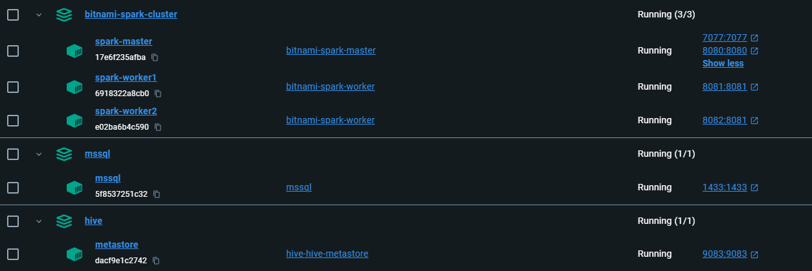
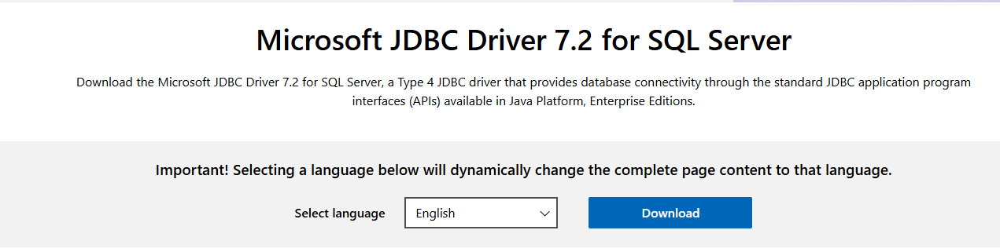
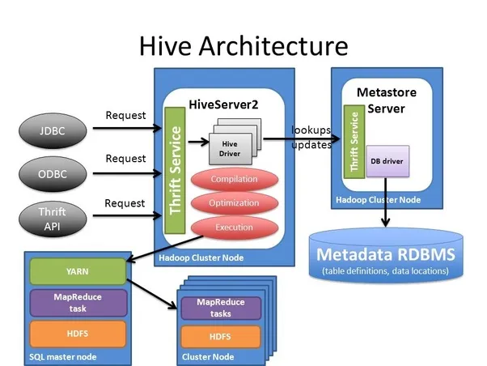
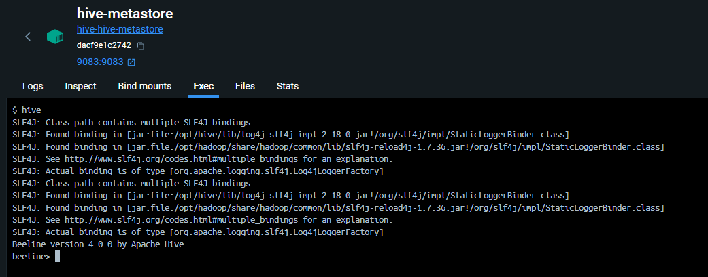
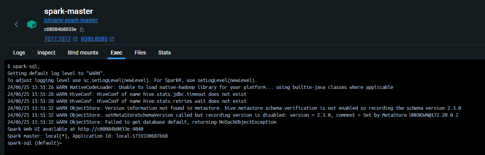
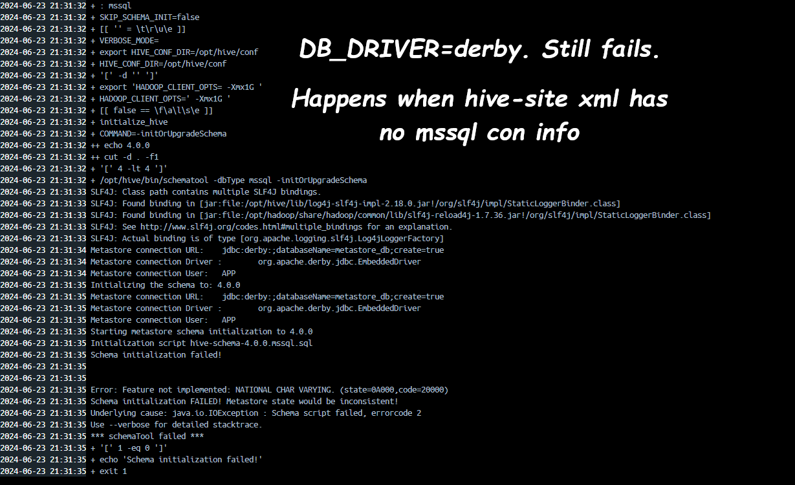

- Setup a complete data warehouse with Spark cluster \& external Hive(MSSQL Metastore)
- For the busy people
- How was the setup created
- Bit Background About Bitnami Spark Container
- Spark container setup details
- MSSQL 2019 container setup details
- Hive Server container setup details
- spark-defaults.conf \& hive-site.xml
- Repository and Metastore Folder Creation
- Testing
- When will be managed or external tables created?
- Errors
- Server Details
Setup a complete data warehouse with Spark cluster & external Hive(MSSQL Metastore)
Here, I will show you how to create a complete warehouse setup with a Spark Cluster and a standalone Hive with an external metastore database (MSSQL). The setup will use 5 containers:
| Service | URL/Connection | Image |
|---|---|---|
| Spark Master | http://localhost:16789/ | spark:3.5.1-debian-12-r7 |
| Spark Worker 1 | http://localhost:16791/ | spark:3.5.1-debian-12-r7 |
| Spark Worker 2 | http://localhost:16792/ | spark:3.5.1-debian-12-r7 |
| SQL Server (SSMS) | localhost,1433, SQL Server Auth: dwdas/Passw0rd |
mcr.microsoft.com/mssql/server:2019-latest |
| Hive Metastore | thrift://hive-metastore:9083 |
apache/hive:4.0.0 |
For the busy people
Follow these steps to get your setup ready:
- Download the zip file on your laptop.
- Go to
Step1xx,Step2xx, andStep3xxfolders and runrun.batin each.
This will create a setup like the one shown below:

A shared volume should be present in the volumes with the mapping shown below:

Here are some important details about the setup:
How was the setup created
Bit Background About Bitnami Spark Container
Their Dockerfile
The official Dockerfile used by Bitnami to create their Spark container can be found on GitHub. Some key parts of the file are:
RUN chown -R 1001:1001 /opt/bitnami/spark
WORKDIR /opt/bitnami/spark
USER 1001
ENTRYPOINT [ "/opt/bitnami/scripts/spark/entrypoint.sh" ]
CMD [ "/opt/bitnami/scripts/spark/run.sh" ]
Non-Root Containers
By default, Bitnami containers run as non-root users. This means when you log into the container, you are not the root user. The container itself runs as a non-root user, but you can change this by specifying User: root in your Dockerfile or Docker-compose.
More details can be found here.
The User 1001
Bitnami Spark containers use the non-root user ID 1001. When you start the container and log in, you will be user 1001. It's important that this user has access to all required directories and volumes. Ensure necessary permissions are set when building the container.
Folder Structure
Bitnami containers store application files in /opt/bitnami/APPNAME/. For example, Spark files are located in /opt/bitnami/spark. More details can be found in the Bitnami directory structure documentation.
Spark container setup details
First, I created the Spark cluster using the Bitnami Spark image bitnami/spark:3.5.1-debian-12-r7. I chose Bitnami because it is popular and offers a constant version for stability. However, you can also use bitnami/spark:latest.
- I used a Dockerfile and docker-compose approach.
- Created a
spark-defaults.confwith just one setting:text spark.sql.warehouse.dir = /data/spark-warehouse - Created a
Dockerfilewith the following important activities: - Created a
/datafolder. - Copied the custom
spark-defaults.conffrom laptop to/conf. - Set the root password and provided user 1001 permissions to /data folder.
-
Created a
docker-compose.ymlfile that included these changes(rest are usual: ```yaml volumes:- shared-data:/data
- ./spark-defaults.conf:/opt/bitnami/spark/conf/spark-defaults.conf environment:
- SPARK_MODE=master # Environment variable to set the Spark mode to master
- SPARK_LOCAL_DIRS=/data/tmp # Local directories for Spark ```
-
Finally, created a
run.batto do the following: ```bat REM Create the Docker volume docker volume create shared-data
REM Build and run the Docker Compose services docker-compose -p bitnami-spark-cluster build docker-compose -p bitnami-spark-cluster up -d ```
MSSQL 2019 container setup details
Setting up the MSSQL container was more straightforward and required less customization than the Spark cluster. I used a Dockerfile and docker-compose approach.
- Created a
Dockerfilewith the following important activities: - Created a user
dwdaswith the passwordPassw0rd. -
Set the root user password to
Passw0rd. -
Created a
docker-compose.ymlfile that included these changes: ```yaml ports:- "1433:1433" # Map port 1433 of the host to port 1433 of the container for MSSQL communication. environment:
- SA_PASSWORD=Passw0rd # Set the system administrator password for MSSQL.
networks: - spark-network ```
- Finally, created a
run.batto do the following: ```bat REM Create the Docker volumes. This is mapped to all Spark containers and the Hive container. docker volume create shared-data
REM Build and run the Docker Compose services docker-compose -p bitnami-spark-cluster build docker-compose -p bitnami-spark-cluster up -d
REM Post-Setup: Create MSSQL user and database docker exec -it mssql-container-name /opt/mssql-tools/bin/sqlcmd -S localhost -U SA -P "Passw0rd" -Q "CREATE LOGIN dwdas WITH PASSWORD='Passw0rd'; CREATE DATABASE hive_metastore;" ```
run.bat: After the container started, I created an MSSQL user
dwdaswith the passwordPassw0rdand an empty databasehive_metastore. This was done inside therun.batfile.
Hive Server container setup details
Setting up the Hive server can be very tricky. I used the official Apache Hive image with a Dockerfile and docker-compose approach.
- Download JDBC Driver:
-
Downloaded
sqljdbc_7.2.2.0_enu.tar.gzfrom Microsoft Download Center.
-
Extracted the
mssql-jdbc-7.2.2.jre8.jardriver to the current folder. -
Create a custom
hive-site.xml: Created a customhive-site.xmlwith MSSQL connection information and directory configurations. Refer to the Step3-Hive/hive-site.xml in the setup folder for more details. -
Create a Dockerfile: Refer to the dockerfile in Step3-Hive folder for more details. Apart from usual activity these two steps are most immortant. I.e. placing the driver to the /lib and hive-site.xml to conf.
dockerfile COPY ./mssql-jdbc-7.2.2.jre8.jar /opt/hive/lib/ COPY ./hive-site.xml /opt/hive/conf/ -
Docker-compose Configuration: Apart from usual stuff the most important was to the environment variable
DB_DRIVER=mssql. -
Run.bat:
- The
run.batscript builds the images, runs the container.
Hive-MSSQL Connection

Apache Hive containers usually use a startup script called '/entrypoint.sh'. This script is set to use Derby(${DB_DRIVER:=derby}) database by default. To use MSSQL instead:
- Change the DB_DRIVER environment variable to 'mssql'.
- Create an empty database called 'hive_metastore' on your MSSQL server.
- Put your MSSQL connection and db details in the 'hive-site.xml' file.
- Add the MSSQL driver file (mssql-jdbc-7.2.2.jre8.jar) to the '/lib' folder.
/entrypoint.sh
#!/bin/bash
set -x
: ${DB_DRIVER:=derby}
SKIP_SCHEMA_INIT="${IS_RESUME:-false}"
function initialize_hive {
COMMAND="-initOrUpgradeSchema"
if [ "$(echo "$HIVE_VER" | cut -d '.' -f1)" -lt "4" ]; then
COMMAND="-${SCHEMA_COMMAND:-initSchema}"
fi
$HIVE_HOME/bin/schematool -dbType $DB_DRIVER $COMMAND
if [ $? -eq 0 ]; then
echo "Initialized schema successfully.."
else
echo "Schema initialization failed!"
exit 1
fi
}
# Additional script content...
So, how I did this:
- During mssql creation I already creatd the hive_metastore empty database and the user
- The dockerfile managed the copying of the driver and the custom hive-site.xml
dockerfile COPY ./mssql-jdbc-7.2.2.jre8.jar /opt/hive/lib/ COPY ./hive-site.xml /opt/hive/conf/ - docker-compose managed set the
DB_DRIVER=mssql
Note: An alternative approach to achieve the same feature would be to:
- Let the container start with the default settings.
- Open
/entrypoint.shand change${DB_DRIVER:=mssql}. - Run
su -c "chmod 777 /entrypoint.sh"with the passwordPassw0rdas the permission will change. - Copy
hive-site.xmlcontaining MSSQL connection info to/opt/hive/conf/. - Restart the container.
spark-defaults.conf & hive-site.xml
Only two configureation files were touched. Spark-defaults.conf in spark server and hive-site.xml in hive server.
spark-defaults.conf & hive-site.xml
spark-defaults.conf important details
Here, only one value was added. The same file is present in all the spark containres. spark.sql.warehouse.dir=/data/spark-warehouse
hive-site important details
<property>
<name>hive.metastore.warehouse.dir</name>
<value>/data/hive-warehouse</value>
</property>
<property>
<name>javax.jdo.option.ConnectionDriverName</name>
<value>com.microsoft.sqlserver.jdbc.SQLServerDriver</value>
</property>
<property>
<name>javax.jdo.option.ConnectionURL</name>
<value>jdbc:sqlserver://mssql:1433;DatabaseName=hive_metastore;</value>
</property>
<property>
<property>
<name>hive.metastore.uris</name>
<value>thrift://hive-metastore:9083</value>
</property>
<property>
<name>hive.metastore.db.type</name>
<value>mssql</value>
<description>
Expects one of [derby, oracle, mysql, mssql, postgres].
</description>
</property>
Repository and Metastore Folder Creation
We have two options to decide on the folder structure:
Our choice: Separate warehouses for Spark and Hive
1. Keep Hive warehouse as is:
- In hive-site.xml:
xml
<property>
<name>hive.metastore.warehouse.dir</name>
<value>/data/hive/warehouse</value>
</property>
2. Set a different warehouse for Spark:
- In Spark configuration:
spark.sql.warehouse.dir=/data/spark/warehouse
/data
├── hive-warehouse/
│ └── (Hive managed tables)
├── spark-warehouse/
│ └── (Spark-managed tables)
Option 2: Use Hive Warehouse for both Spark and Hive
1. Configure Spark to use the Hive metastore:
- Set spark.sql.hive.metastore.version and spark.sql.hive.metastore.jars in Spark configuration.
2. Use the same warehouse directory for both:
- In hive-site.xml:
xml
<property>
<name>hive.metastore.warehouse.dir</name>
<value>/data/spark-warehouse</value>
</property>
- In Spark configuration. Using(spark-defaults.conf) or setting during session etc.
spark.sql.warehouse.dir=/data/spark-warehouse
Testing
Testing Hive Go the the hive container and type hive. You should see output lilke this: 
Testing spark-shell Go to any of hte spark containers's terminal and key in spark-shell, you should see output liek this:

Testing spark-sql Go to any of hte spark containers's terminal and key in spark-sql, you should see output liek this:

When will be managed or external tables created?
When configuring Spark to work with Hive, the type of table created (managed vs. external) depends on specific settings in your Spark configuration.
If spark-defaults.xml includes:
spark.hadoop.hive.metastore.uris=thrift://hive-metastore:9083
Then, spark will create all tables as EXTERNAL. Regardless of whatever settigngs you try.

If spark-defaults.xml does not include:
spark.hadoop.hive.metastore.uris=thrift://hive-metastore:9083
Then tables are created as MANAGED by default and stored in the directory specified by spark.sql.warehouse.dir.

You can still create Hive tables stored in the Hive warehouse. To do this, include:
.config("spark.hadoop.hive.metastore.uris", "thrift://hive-metastore:9083") \
.enableHiveSupport() \
In this case, the tables will be EXTERNAL and stored in the directory specified by hive.metastore.warehouse.dir in hive-site.xml
Errors
-
If DB_DRIVER=derby in env var but hive-site.xml has no mssql connection: 
-
If you are unable to create folders or perform any operation. It could be the user 1001 is not having enough permissions. This is a typical user Bitnami spark configures to run the container.
Server Details
| Configuration | Details |
|---|---|
| Hive Metastore URI | spark.hadoop.hive.metastore.uris=thrift://hive-metastore:9083 |
| User and Database | User dwdas (PASSWORD=Passw0rd), Database hive_metastore. |
| hive-site.xml | Details |
hive.metastore.warehouse.dir |
/user/hive/warehouse |
javax.jdo.option.ConnectionURL |
jdbc:sqlserver://mssql:1433;databaseName=hive_metastore |
| spark-defaults.conf | Details |
spark.sql.warehouse.dir |
/data/spark-warehouse |
| Service | Configuration Details |
|---|---|
| Spark Server Configuration | |
| Image | spark:3.5.1-debian-12-r7 |
| User running container | 1001:1001 |
| Environment Variables | |
JAVA_HOME=/opt/bitnami/java |
|
PYTHONPATH=/opt/bitnami/spark/python/ |
|
SPARK_HOME=/opt/bitnami/spark |
|
SPARK_USER=spark |
|
root: Passw0rd |
|
| Mounted Volume | shared-data:/data |
| SQL Server Configuration | |
| Environment Variables | |
SA_PASSWORD=Passw0rd |
|
Server name: mssql |
|
/opt/mssql/bin/sqlservr |
|
| Hive Configuration | |
| Environment Variables | |
HIVE_HOME=/opt/hive |
|
SERVICE_NAME=metastore |
|
DB_DRIVER=mssql |
|
TEZ_HOME=/opt/tez |
|
HIVE_VER=4.0.0 |
|
JAVA_HOME=/usr/local/openjdk-8 |
|
PWD=/home/dwdas |
|
HADOOP_HOME=/opt/hadoop |
|
| Thrift Server URL | thrift://hive-metastore:9083 |